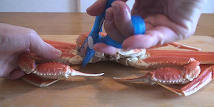
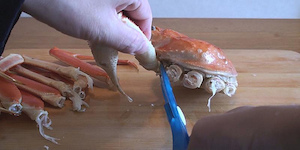
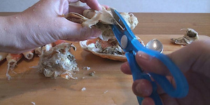
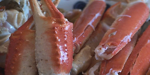

横長でちょっとすました顔をした
ズワイガニ。
殻をむいた「カニしゃぶ」用のポーションとかも手間いらずで人気ですが、
今回は丸ごと一杯です。
３つのカニの中で一番解体が楽かな？と思って最後に残しておいたんだけど、実はこの子が一番難易度高かった気がします。
まずは足を切り離します。切り離す・・・のが、大変？
意外に殻が固く最初苦戦しちゃいましたが、
関節部分にうまくハサミを入れてそこだけ切り離してしまえば、あとはねじりながら軽く切れます。
コツ覚えたら結構楽しいかも。

そして「ふんどし」をとりはずします。

甲羅もはずします。こちらもカニみそが
あるので、こぼれないよう静かに慎重に。

ぴらぴらのエラ「ガニ」を切り離します。
抱き身は半分に切って、さらに足の切り口に対して縦になるようさらに半分に。

自分、間違って足を間接で切り離しちゃったんですが、これは切らなくてよかったみたいです。。

足の太い部分は表側に２本の切れ目を、
細い部分は裏側に一本の切れ目を。
さすがに一人で「たらばがに」「毛ガニ」をやっつけた後で、
手に力が入らなくなってきています。
それにズワイガニって、堅いんですよね。
これを体力がある最初にやっつけるべきだった。
下手な切り方になっちゃったけど、とにかく完了。
でもこれでいよいよ・・・